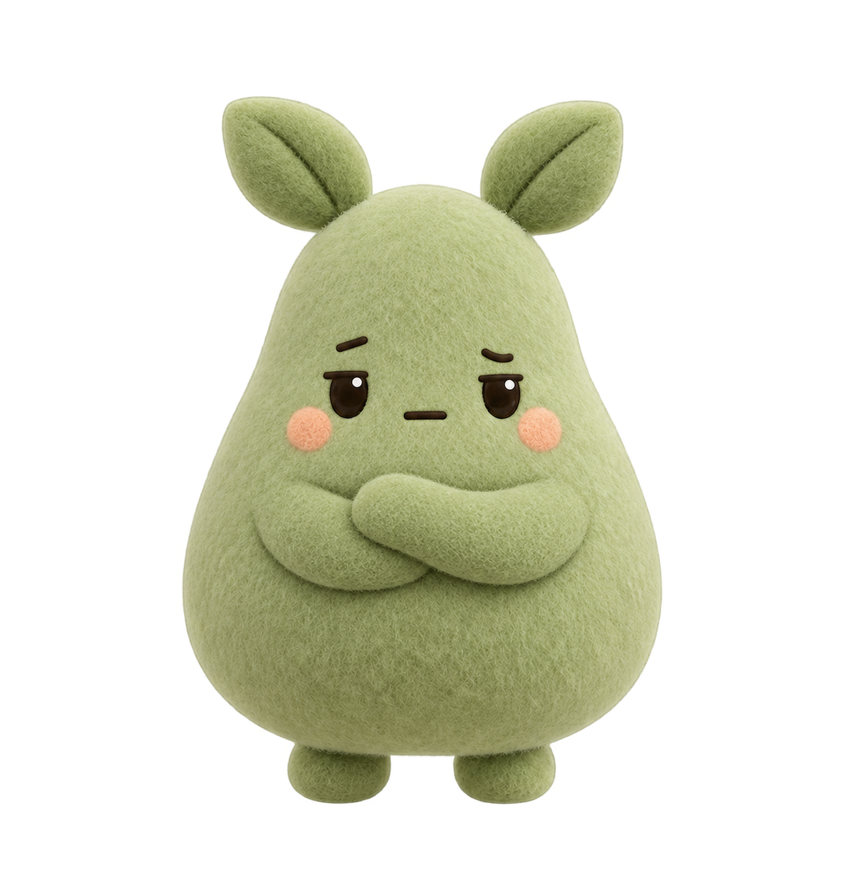

TON PETIT GARDIEN DU TEMPS
Du temps pour ce qui compte.
Miso veille sur tes pauses. Tout simplement.
✧✦✧
Coucou, moi c’est Miso ♡
Un petit clic, un petit câlin.
Sur tes réseaux aujourd’hui
0 minLa première balade à 30 min
CHAQUE PETITE PAUSE COMPTE
Ton temps, en douceur.
Un regard sur tes habitudes, sans te mettre la pression.
Les sept derniers jours
minutes / jourUn peu plus en détail
Aujourd’huiLes données restent sur ce PC. Le compteur repart à zéro à minuit, et garde 30 jours d’historique.
À CHACUN SES HABITUDES
Où Miso t’accompagne.
Choisis les applications qui font parfois oublier l’heure.
ⓘ
Le temps compte seulement quand l’application est au premier plan. Dans un navigateur, Miso reconnaît le réseau grâce au titre de l’onglet. Le suivi s’arrête après 5 minutes sans activité.
＋ Ajouter une application ou un site
Miso doit rester ouvert, même réduit dans la barre des tâches. Fermer sa fenêtre arrête le suivi.
DOUX, MAIS UN PEU TÊTU
Il a son petit caractère.
Plus le temps passe, plus Miso se fait remarquer.

APRÈS 30 MINUTES
Juste un petit passage.
Miso se balade en bas de ton écran,
de droite à gauche. Un premier coucou.

APRÈS 60 MINUTES
On est encore là ?
Une descente en rappel, un regard appuyé…
puis il remonte comme si de rien n’était.
APRÈS 90 MINUTES
Il peut attendre. Vraiment.
Il surgit du bas, croise les bras
et reste là. Le message est assez clair.
✦APRÈS 120 MINUTES
Le sort du grand air.
Miso voit grand. Ses sorts recouvrent l’écran
pour t’inviter à une vraie déconnexion.
♡
Tu gardes la main : chaque animation a un bouton Masquer.
Raccourci de secours : Ctrl + Alt + M. Les essais ne changent pas tes statistiques.
Chaque palier se déclenche une fois par jour, sur le temps cumulé des applications choisies. L’overlay apparaît sur l’écran du curseur.